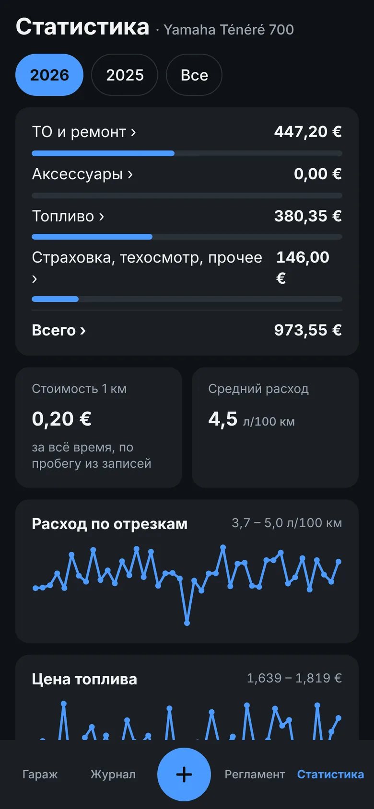

Дорога.↗ Гараж.↘ Учёт.↘
Канал о мотоциклах без глянца: поездки, обслуживание своими руками и честные цифры — во что на самом деле обходится владение.
Про мотоциклы — как есть.
Снимаю то, что делаю сам: куда еду, что меняю в гараже и сколько это стоит. Без постановки и без обзоров «на один день».
Поездки
Маршруты, погода, усталость и всё, что не попадает в рекламные ролики.
Своими руками
Масло, цепь, тормоза, расходники: по шагам, с моментами затяжки и артикулами.
Честные цифры
Каждая заправка и каждый чек записаны. Из этого и выросли таблица и приложение.



Tolimoto LogBETA
Журнал ТО и заправок для мотоцикла и машины. Помнит, когда менять масло, считает расход и траты — и хранит всё у вас.
- Заправка в одно касаниеГлавная кнопка на первом экране, транспорт выбирается свайпом.
- Регламент по пробегу и времениЧто и когда менять — с понятным статусом.
- Расход и тратыПо каждой заправке, по годам и цена километра.
- Без регистрации и без сетиЗаписи хранятся прямо на телефоне.
- Google Таблица — по желаниюСинхронизация в обе стороны, фото чеков на вашем Диске.
- Импорт из Fuelly и FuelioИстория заправок переезжает за минуту.
У Tolimoto нет серверов с вашими данными. Записи лежат на устройстве, а если подключите Google — в вашей собственной таблице и папке на Диске. Приложение видит только файлы, которые создало само. Политика конфиденциальности
Как установить
Tolimoto Log — веб-приложение: ничего не нужно скачивать из магазина. Добавьте его на экран «Домой», и оно будет открываться на весь экран, как обычное, и работать без сети.
- 1. Откройте приложение в SafariЗайдите на app.tolimoto.com в Safari — стандартном браузере iPhone.
- 2. Нажмите «Поделиться»Квадрат со стрелкой вверх на панели внизу экрана.
- 3. Выберите «На экран „Домой“»Если пункта не видно сразу, пролистайте список вниз.
- 4. Нажмите «Добавить»Название Tolimoto Log можно оставить или сократить.
- 5. Открывайте с экрана «Домой»Дальше запускайте приложение с иконки, а не из Safari.
- 1. Откройте приложение в ChromeЗайдите на app.tolimoto.com в Chrome.
- 2. Откройте менюТри точки в правом верхнем углу.
- 3. Выберите «Установить приложение»На некоторых телефонах пункт называется «Добавить на главный экран».
- 4. ПодтвердитеНажмите «Установить». Chrome может и сам предложить это внизу экрана.
- 5. Открывайте с главного экранаИконка появится на главном экране и в списке приложений.
Сначала установите, потом записывайте. На iPhone установленное приложение хранит данные отдельно от Safari. Добавьте его на экран «Домой» до того, как начнёте вводить записи, — или перенесите их резервной копией JSON из настроек.
На Android приложение работает в Chrome. Делалось и проверялось оно в первую очередь на iPhone, так что если что-то выглядит не так — напишите нам. Картинки упрощены; названия пунктов меню могут немного отличаться в разных версиях системы.
Напишите нам.
Вопросы о приложении или таблице, идеи для видео, сотрудничество — пишите.